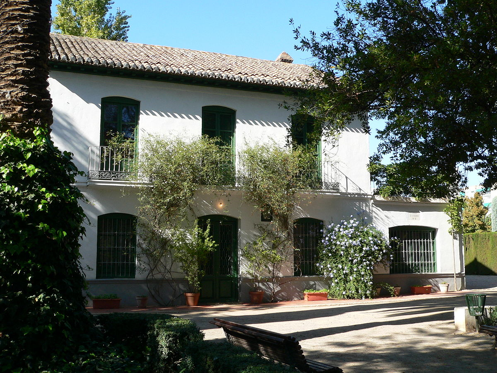

La Huerta de San Vicente es un lugar fundamental en la producción artística del poeta. Era la antigua residencia familiar de los García Lorca durante el verano.
Sus padres adquirieron esta casa que se hallaba a las afueras de Granada para pasar el verano más fresquito junto a la Vega.
Hoy en día la casa ha quedado integrada en la ciudad, ya que ésta ha crecido hasta llegar a las huertas de la vega.
Estos parajes que son la frontera entre la ciudad y el campo, desde tiempos de los árabes sirvieron de residencia de verano, donde Federico volvía para encontrarse con sus raíces.
Aquí escribió muchas de sus mejores obras (Romacero Gitano, La Casa de Bernarda Alba) en los veranos de los años 1926 a 1936.
Hoy, se ha acondicionado como Casa Museo García Lorca, en la que se exponen objetos originales del poeta, dibujos, manuscritos, muebles, cuadros.
El Museo Federico García Lorca se mantiene en su estructura y mobiliario tal y como estaba cuando lo habitó el poeta.
Es una construcción de principios del siglo XX con una estructura sencilla, y con una decoración sobria, típica de este tipo de casas de la Vega de Granada.
En ellas, de día se mantiene una temperatura fresca en el interior y las noches tienen una agradable temperatura y un olor especial.
Las visitas a la Casa Museo Federico García Lorca son siempre guiadas y se llevan a cabo cada 45 minutos. No se puede entrar por libre.
| Precio | |
|---|---|
| Adultos | 3€ |
| Niños,Estudiantes hasta 26 años y Mayores de 65 años | 1€ |
| Miercoles No Festivos | Gratis |
| Horario | |
|---|---|
| Martes a Domingos | 09:00-15:00 |